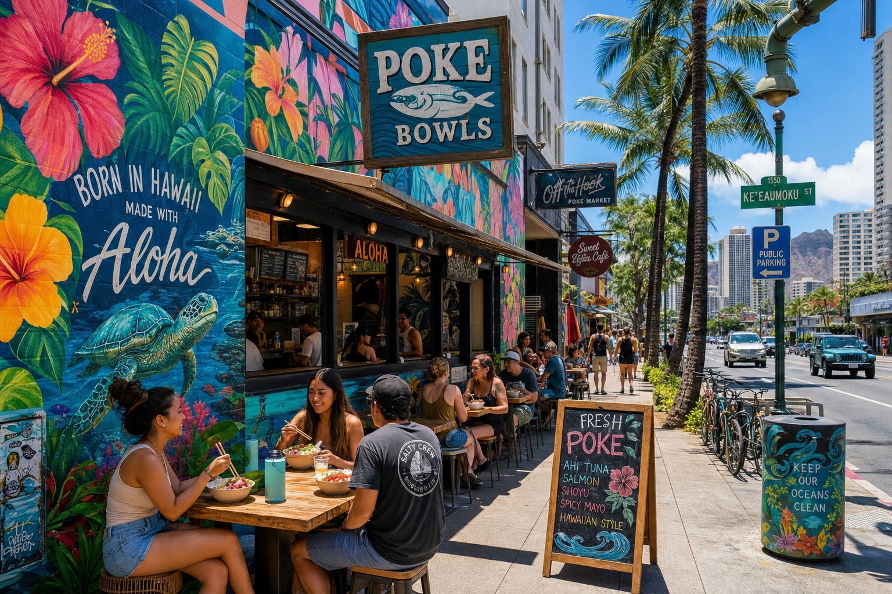

We're obviously biased — we run a poke truck — but we love good food, and that means we know where the best poke is in Honolulu beyond our own truck. Here's our honest local guide.
The Fish Markets (The Original)
If you want poke in its most traditional, affordable form, the answer is always the fish market counter. Several supermarkets across Honolulu maintain exceptional poke programs:
- Tamashiro Market in Kalihi — a Honolulu institution for 75+ years. The poke here is made fresh daily and sells out by early afternoon. Their Hawaiian-style ahi with inamona is our benchmark.
- Foodland Farms (Aina Haina) — Foodland's poke program is consistently excellent. Good variety, fresh fish, reasonable prices.
- Times Supermarket — Multiple locations, reliable quality. Their spicy ahi is a consistent crowd-pleaser.
Best Sit-Down Poke
If you want an elevated poke experience in a restaurant setting, look to Nobu Honolulu at the Waikiki Beach Walk — they serve a showstopping yellowtail jalapeño poke that's distinctly un-Hawaiian but spectacularly delicious. Roy's and Highway Inn also have worthy poke appetizers on their menus.
Food Trucks (Our Category)
We're not the only good poke truck in Honolulu, though we'd like to think we're the best. The Kakaako waterfront area has developed a terrific food truck culture where rotating trucks serve daily. Check Eater Honolulu for current truck roundups.
What to Look For
When evaluating any poke, the fish is everything. Fresh ahi should be deep red, not brown or oxidized. It should smell like the ocean, not like fish. The texture should be firm and have a clean bite — never mushy. If you detect a strong fishy smell, it's not fresh. Don't be afraid to ask when the fish was delivered.
Good poke also doesn't need a lot of ingredients. If the sauces are overpowering and you can't taste the fish, that's a red flag. The fish should sing.